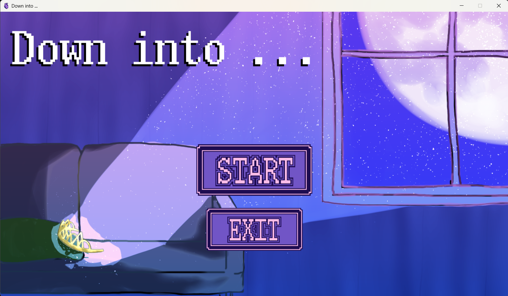
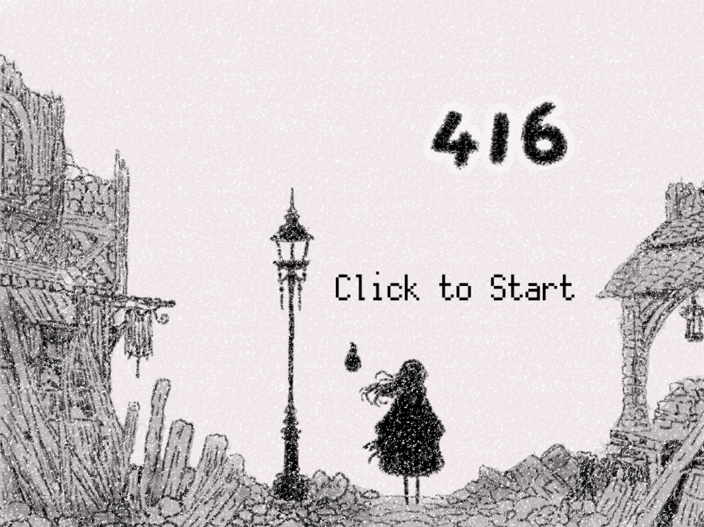
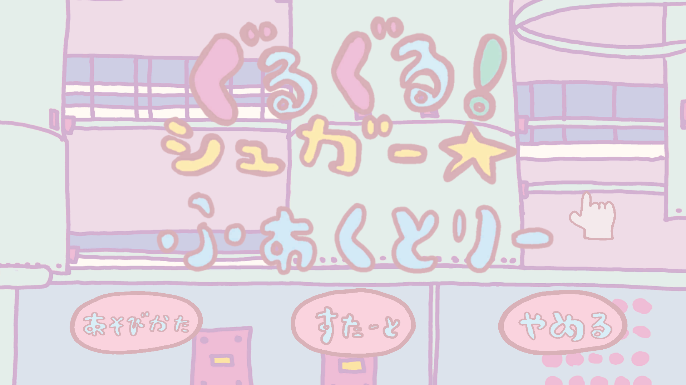
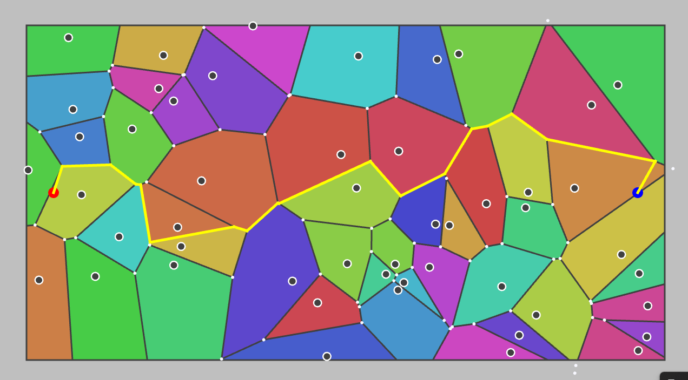
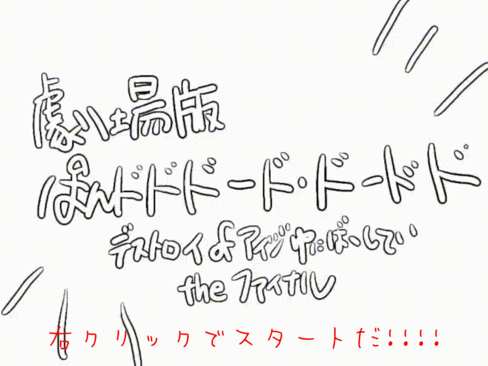
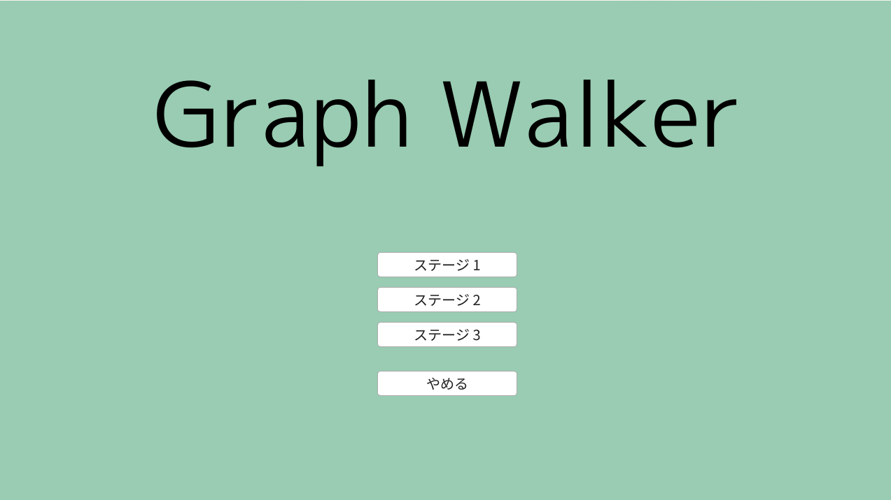

Portfolio
※一部の作品はチーム制作したもので、チームメンバーから許諾を得ていないため、遊べないものもあります。

Down into...
怪物から逃げながら塔の脱出を目指す倉庫番系パズル。C++とSiv3Dを使った初めてのチーム開発作品。会津大学・蒼翔祭2022、コミックマーケット101にて無料頒布。

416
たくさんの迫りくる化け物を倒すヴァンサバ風ローグライク。初めてのプロジェクトリーダー経験。蒼翔祭2023、コミックマーケット103にて無料頒布。

ぐるぐる☆しゅがーふぁくとりー
落ちてくる飴玉を回転するドーナツを使ってくっつける落ちものパズル。初めてのUnity開発。蒼翔祭2024にて展示。

📐VoronoiShortestPathSolver
ボロノイ図を用いた最短経路探索シミュレーション。ビジュアルコンピューティングのための幾何学という授業で得た知見をもとに作成。点（母点）がいくつか与えられたとき、どの点に一番近いかによって平面を分割したものをボロノイ図といい、それを用いて最短経路を探索する試み。
GitHub →
劇場版ぱんドドド―ド
キャラクターを育成して、アクションに挑む新感覚おばか育成アクション。プロジェクトリーダーとしてチームメンバーのサポートをしながら開発。Unityのようなコンポーネントシステムを参考に設計し、ステージ制作ツールを別途作成。モンスターに支配された会津大学を企画開発部のマスコットキャラクター「ぱんどど」を育成し、モンスター退治をするというストーリー。

Vimove
Vimの操作方法でクリアを目指す迷路ゲーム。Vimの上下左右移動（h, j, k, l）で迷路をクリアするゲーム。Vimの操作感に慣れるために作成。あらかじめ用意した数十ステージと、全ステージクリア後に開放されるエンドレスモード（ランダムで迷路を生成）で遊べる。
ダウンロード →
🕸️